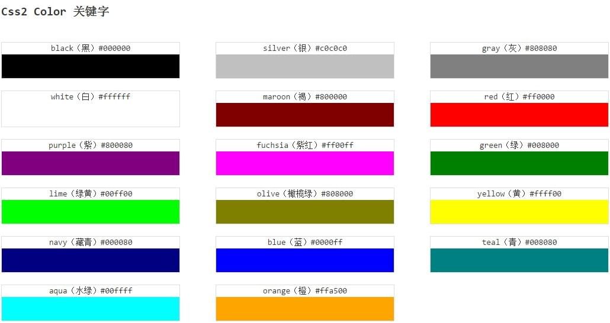
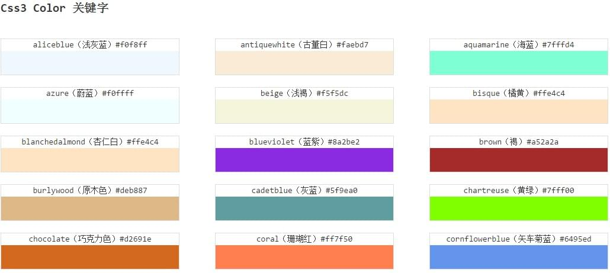
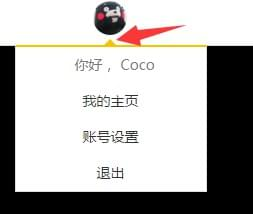
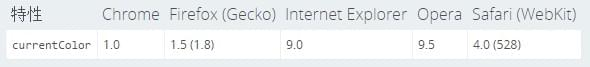
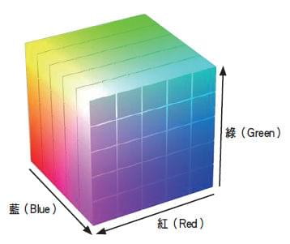
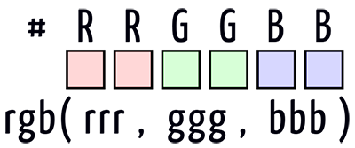
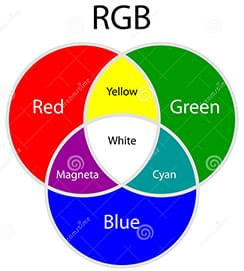
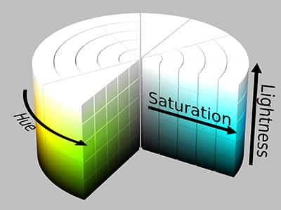

说到 CSS 颜色，相比大家都不会陌生，本文是我个人对 CSS 颜色体系的一个系统总结与学习，分享给大家。
先用一张图直观的感受一下与 CSS 颜色相关大概覆盖了哪些内容。
接下来的行文内容大概会按照这个顺序进行，内容十分基础，可选择性跳到相应内容处阅读。
色彩关键字
嗯，色彩关键字很好理解。它表示一个具体的颜色值，且它不区分大小写。譬如这样 color:red 的 red 即是一个色彩关键字。
在 CSS3 之前，也就是 CSS 标准 2，一共包含了 17 个基本颜色，分别是：

而到了 CSS3，色彩关键字得到了极大的扩充，达到了 147 个。下面仅仅是列出了一部分:

值得注意的是，未知的关键字会让 CSS 属性无效。
这里的这个测试 test3 是为了说明，当传入的色彩关键字错误，CSS 属性将无效而不是使用当前的 currentColor 替代。 currentColor会在下文说明。
哪些属性可以设置颜色
所有可以用到颜色值的地方，都可以用色彩关键字替代，那么在 CSS 中，什么地方可以用到颜色值呢？
文本的颜色
color:red元素的背景色
background-color:red（包含各类渐变）元素的边框
border-color:red元素的盒阴影或文字阴影
box-shadow:0 0 0 1px red|text-shadow:5px 5px 5px red运用在一些滤镜当中
filter: drop-shadow(16px 16px 20px red)<hr />水平线的颜色
一些无法直接设置，但是可以被得到或者继承当前元素 currentColor 的属性：
<img>的 alt 文本。也就是，当无法显示图像时，代替图像出现的文本，会继承这个颜色值。ul 列表项的小点
一些比较常见的就不举例了，说一下 <hr/> 、 <img> 的 alt 文本和 ul 列表项的小点。
经过测试， <hr/>的颜色值，可以通过设置它的 border 的颜色值来表示。
<img> 的 alt 文本和 ul 列表项的小点则会继承当前元素 currentColor 的属性。
对于表单控件 <input type="radio"> <input type="checkbox"> ，暂时没有找到很好的直接改变颜色的方法，如果有知道希望不吝赐教。
transparent
transparent 的字面意思就是透明。它用来表示一个完全透明的颜色，即该颜色看上去将是背景色。
也可以理解为它是 rgba(0,0,0,0) 的简写。
值得注意的是:
- 在 CSS3 之前，transparent 关键字不是一个真实的颜色，只能用于
background-color和border-color中，表示一个透明的颜色。而在支持 CSS3 的浏览器中，它被重新定义为一个真实的颜色，transparent 可以用于任何需要color值的地方，像 color 属性。
那么这个透明值有什么用呢？简单列举一些例子：
transparent 用于 border，绘制三角形
这算是 transparent 最常见的一个用法，用于绘制三角形。
结合上图图1、图2，可以看到利用一个高宽为 0 的 div，设置它的 border ，当任意三边的 border 颜色为 transparent 时，则可以得到任意朝向的一个三角形。
像上文说的，由于 transparent 在低版本浏览器中（IE78）可以使用在 border、background 中，所以此方法兼容性很好，可以利用于很多场景。

transparent 用于 border，实现增大点击热区
按钮是我们网页设计中十分重要的一环，而按钮的设计也与用户体验息息相关。让用户更容易的点击到按钮无疑能很好的增加用户体验，尤其是在移动端，按钮通常都很小，但是有时由于设计稿限制，我们不能直接去改变按钮元素的高宽。那么这个时候有什么办法在不改变按钮原本大小的情况下去增加他的点击热区呢？
这里，借助透明的 border 可以轻松帮我们实现（我 之前一篇文章写到过，利用伪元素也可以实现），利用一层透明的 border:20px solid transparent 我们可以这样写：
试着将光标靠近 Btn，会发现在还未到达有颜色区域之前，就已经触发了鼠标的交互响应事件 hover，利用这一点在移动端可以很好的扩大按钮的可点击区域又不至于改变按钮本身的形状。像这样：

嗯哼，这里我们将 border 用于了扩大鼠标点击区域，然而真实情况是有的时候我们的按钮必须要用到 border，而 border 又只能设置一重（无法像 box-shadow和 渐变一样设置多重 border），这个时候如果还需要运用这种方法，可以使用内阴影 box-shadow模拟一层 border，像这样：
transparent 用于 background
transparent 用于 background，通常可以制造出各种各样的背景图像。这里举个简单的例子，利用透明渐变，实现一个切角图形：
通过 线性渐变 linear-gradient 实现从透明色到实色的变化，将四个四分之一大小（ background-size: 50% 50%）的图形组合在一起，就生成了一个切角图形。
利用 transparent 与渐变的配合还能生成各种各样美妙的图形，可以戳下面看看：
transparent 用于文本 color
配合 box-shadow ，在文本上运用 transparent，可以营造出一种文字发光的效果，鼠标 hover 下面的文字试试：
transparent 其实还有很多作用，暂且说这么多，欢迎继续讨论。
currentColor
很多人都不知道还有 currentColor 这个东东。和 transparent 一样，它也是一个关键字，顾名思义，它表示当前颜色。它来自自属性或者继承于它的父属性。
可以简单的理解为当前 CSS 标签所继承或设定的文本颜色，即 color 的值。
那它具体可以怎么用呢，根据我们书写 CSS 的原则 DRY(Don’t Repeat Yourself)，使用这个关键字可以很好的减少改动 CSS 时的工作量。看个例子：
上面的例子，我只在 color 里写了颜色，在 border 和 box-shadow 中使用了 currentColor 属性。可以看到，这两个属性的颜色值都被设置为了 color 中设置的值，当我们需要用到这种同色表现的时候，使用 currentColor 更佳，方便日后改动。
但是，currentColor 是 CSS3 新增的，在老版本浏览器下是无法识别的。那么是否在老版本浏览器下就无法使用了呢，也不尽然，还是有一些特例的，看看下面这个：
可以看到，上面我只在 color 里写了颜色，border 的值为 1px solid，box-shadow 也是，并没有带上颜色值，但是依然表现为了 currentColor 的值。这是因为边框颜色和阴影颜色默认就是当前盒子的文本颜色，其中 border 兼容性很好，可以支持到 IE6 。
当然 border 和 box-shadow 是特例，不是所有需要填写颜色值的属性不填写都会默认继承文本的值的。
那么元素中将会得到或者继承元素 color 值有哪些呢：
- 元素的文本内容
- 文本的轮廓
- 元素的边框
- 元素的盒阴影
- filter:drop-shadow()
<img>的 alt 文本。也就是，当无法显示图像时，代替图像出现的文本，会继承这个颜色值。- 列表项的小黑点和边框
- 一些浏览器（比如Chrome）水平线（
<hr>）的边框颜色。（没有边框的话，颜色就不会受影响）。
currentColor 的兼容性

rgb() 与 rgba()
颜色表示模型的话，简单了解一下。
rgb() 表示颜色的红-绿-蓝（red-green-blue (RGB)）模式，rgba() 多一个 a ，表示其透明度，取值为 0-1。
rgb 的颜色模型通常由一个立方体表示：

我们知道，通常我们使用的时候，不使用缩写的话，使用十六进制符号 #RRGGBB,

在 #RRGGBB 中，RR 表示 红色的深浅，GG 表示绿色的深浅，BB 表示蓝色的深浅。取值都是从 00 - FF，值越大表示该颜色越深。
如果采用 rgb(RR,GG,BB) 的写法，RR 取值 0~255 或者百分比，255 相当于 100%，和十六进制符号里的 F 或 FF 。
了解了 rgb() 的含义的话，记住常用的颜色值其实是很容易的，像上面说的 RR 表示红色的深浅，那么理解记忆 #FF0000 表示为红色就 so easy 了，同理可以得到 #00FF00 表示绿色， #0000FF表示蓝色。
再记住颜色的叠加原理：

我们就可以轻松的记住， #FF00FF红蓝叠加表示紫色， #FFFF00红绿叠加表示黄色， #00FFFF蓝绿叠加表示青色。
hsl() 与 hsla()
除了 rgb 表示法，颜色也可以使用 hsl() 表示。hsl()被定义为色相-饱和度-明度（Hue-saturation-lightness），hsla() 多一个 a ，表示其透明度，取值为 0-1。。
hsl 相比 rgb 的优点是更加直观：你可以估算你想要的颜色，然后微调。它也更易于创建相称的颜色集合。
hsl 的颜色模型通常由一个圆柱体表示：

- 色相（H）是色彩的基本属性，就是平常所说的颜色名称，如红色、黄色等。
- 饱和度（S）是指色彩的纯度，越高色彩越纯，低则逐渐变灰，取0-100%的数值。
- 明度（V），亮度（L），取0-100%。
其实对于我们前端而言，使用 hsl 表示颜色会更方便。
以一个按钮为例，我们用 hsl 颜色表示法表示按钮 normal 状态下的背景色值，我们希望 hover 的时候，背景色暗一点，而 active 的时候背景色亮一点。如果采用 rgb 表示法，我们需要 3 个完全不一样的颜色，而采用 hsl 表示法，我们只需要在 hover 和 active 的时候去改的 颜色值的 l （即Light，亮度）值即可。运用上面出现过的一个例子再看看：
这里 background:hsl(200, 60%, 60%) 在 hover 和 active 的时候，我只改动了 hsl 颜色值的第三个值达到了我们希望的效果。
rgb 到 hsl 的转换
这里有个小 tips 可能有些人不知道，在开发阶段我们只有一个 rgb 值，但是希望转换成 hsl 值，使用 chrome 开发者工具可以很便捷的做到，如下图，我们只需要选中我们想转换的颜色值，按住键盘左 shift，点击这个颜色表示框，即可进行转换：

到此本文结束，比较基础，希望有人看。如果还有什么疑问或者建议，可以多多交流，原创文章，文笔有限，才疏学浅，文中若有不正之处，万望告知。
如果本文对你有帮助，请点下推荐，写文章不容易。